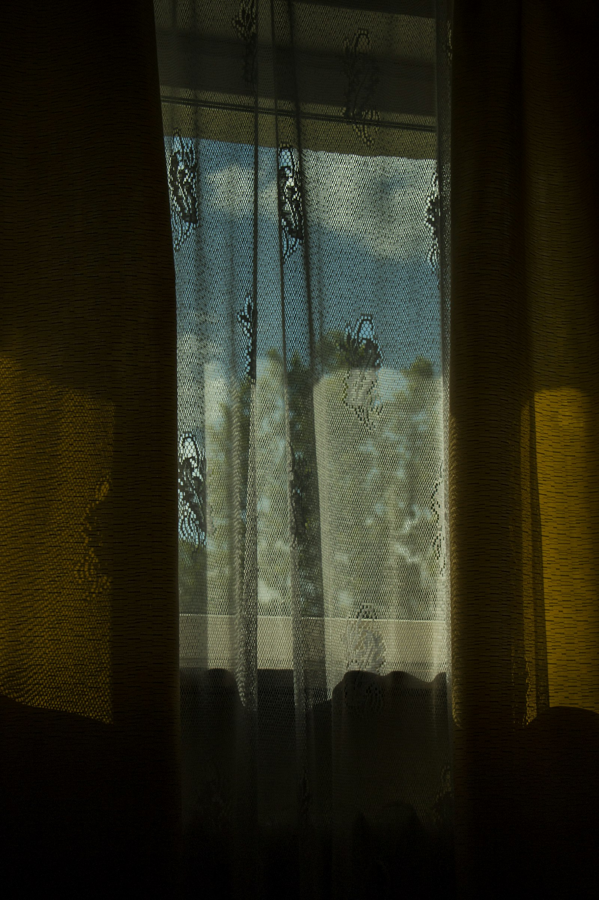
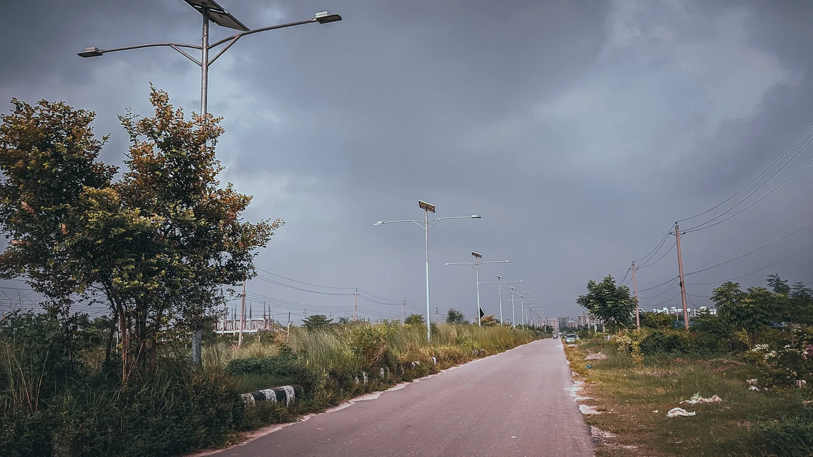
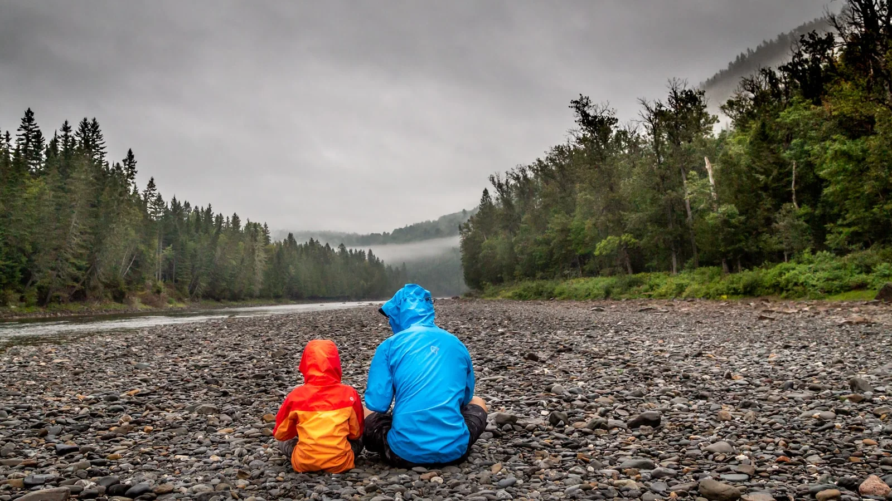
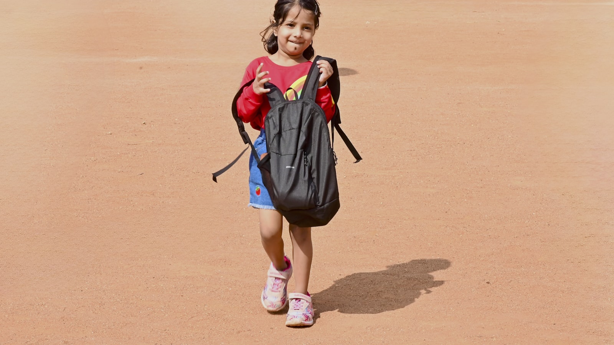
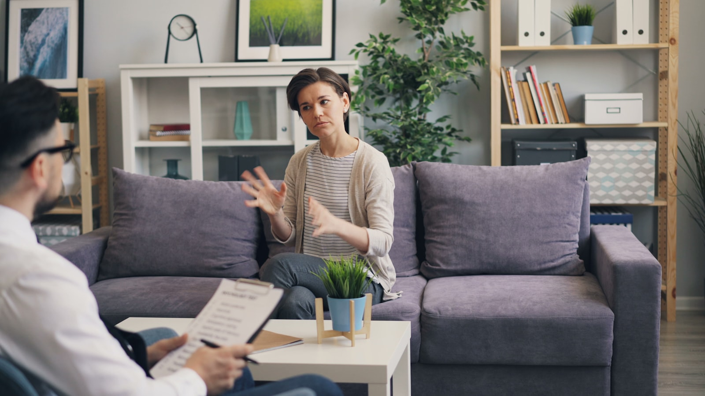
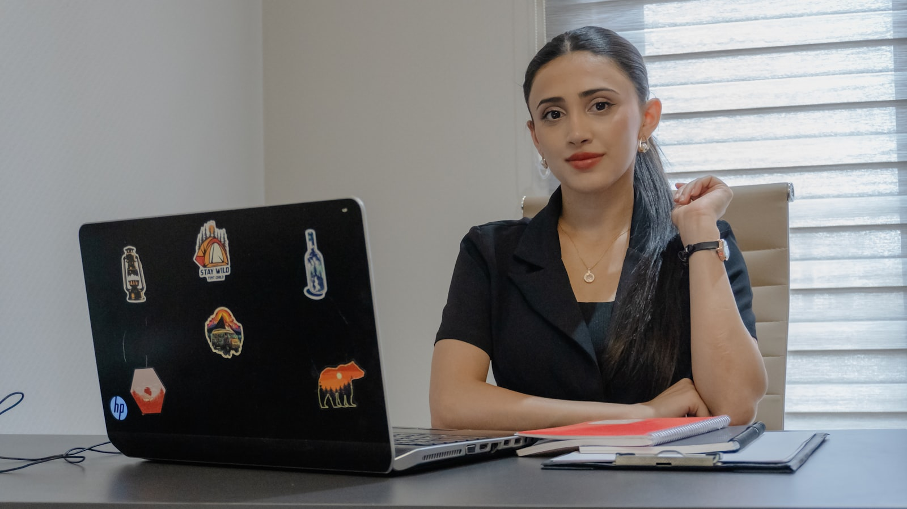

BLOQ
RAGIMOFF Bloq
Klinik məqalələr, elmi araşdırmalar, psixoloji həll yolları və terapevtik protokollar.
Klinik məqalələr, elmi araşdırmalar, psixoloji həll yolları və terapevtik protokollar.













